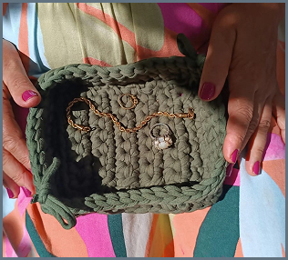
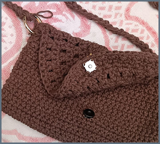
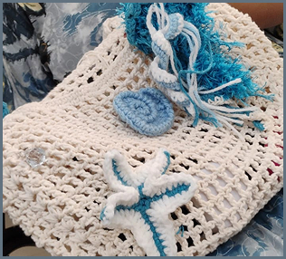
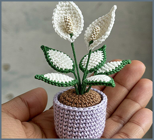
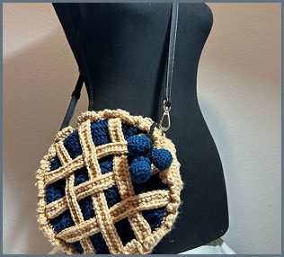

Jóias de Calíope
Um porta joías para guardar suas relíquias,
uma peça prática, discreta e durável. Por ser feita com tecido,
ajuda na preservação de objetos delicados, sem perigo de danificar.

Borboleta Dourada
Uma bolsa discreta, versátil e leve
para levar seus objetos essenciais. Sua alça é removível para uma
lavagem fácil e além disso é reforçada com uso de mais fios.

Rede Oceano
Uma bolsa com muita personalidade,
inspirada no oceano e feita com detalhes em azul usando várias linhas diferentes.
Mesmo nao aparentando, comporta muitos objetos para tornar seu dia pratico e bonito.

Lótus Pálida
Uma lindíssima peça que pode ser usada como uma ótima decoração em
qualquer lugar em que você dejesar. Feita com extremo cuidado para resultar em
uma bela harmonia de cores.

Árvore Blueberry
Feita em crochê com fios encorpados, ela imita uma torta de mirtilo
recém-saída do forno. Redondinha, estruturada e com alça tiracolo, é aquele acessório que transforma
qualquer look simples em uma história divertida.

Rosa Romântico
Em tons suaves de creme com detalhes em rosa pêssego, o crochê forma
texturas delicadas. O design é único: gola halter com abertura charmosa, babado volumoso que
abraça os ombros e mangas longas trabalhadas com pontos rendados.